01. Overview
Coordinating personal productivity tools often requires manual overhead. Jarvis is a solo, agentic AI assistant built to consolidate email, calendar tracking, and focus timers under a single conversational interface using LLM tool-calling.
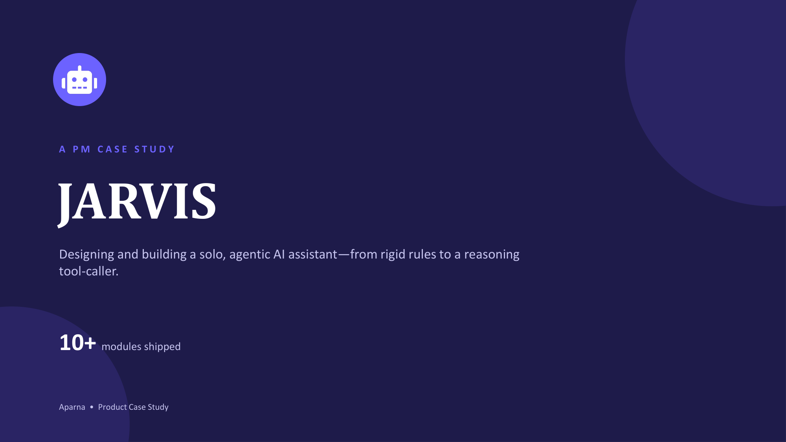
02. The Problem
Managing personal admin means constant app-switching. Email, calendars, notes, and productivity tools operate in silos without shared context, eating away valuable focus time:
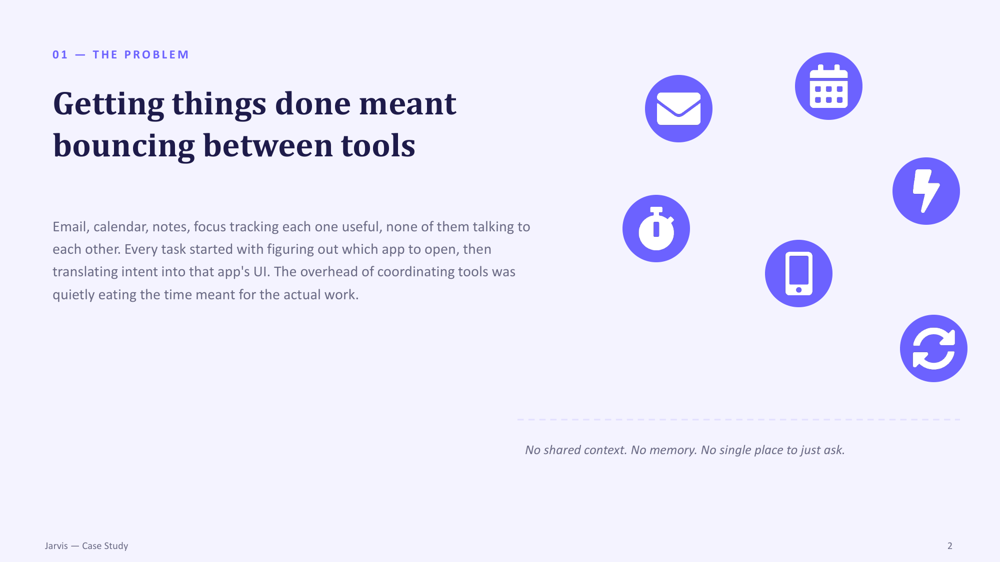
03. The Vision
Creating a single conversational layer capable of parsing natural language, chaining operations, and executing actions across connected tools:
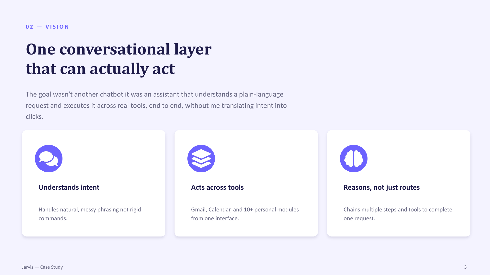
04. Target User
Designing for the high tech-comfort solo operator who acts as their own manager, operations lead, and administrator simultaneously:
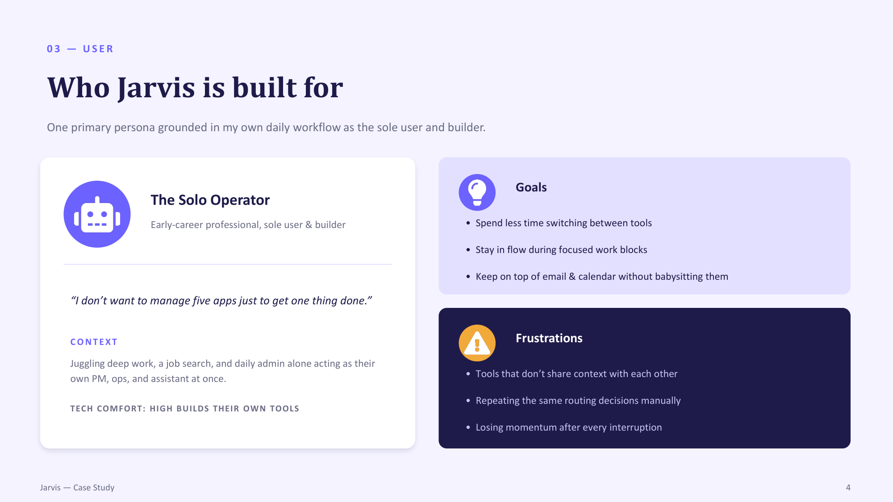
05. Approach & Phases
Detailing the end-to-end solo build timeline, moving from a foundational assistant loop to architecture refactoring and final reliability passes:
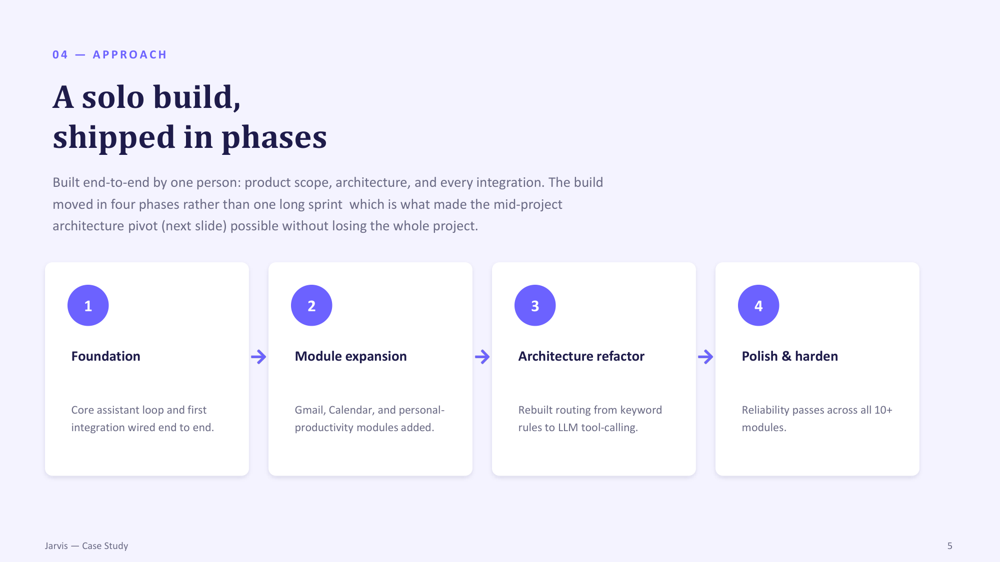
06. Key Decision
Pivoting mid-project from rigid keyword/intent matching to a dynamic LLM tool-calling engine to support messy, varied phrasing and multi-step requests:
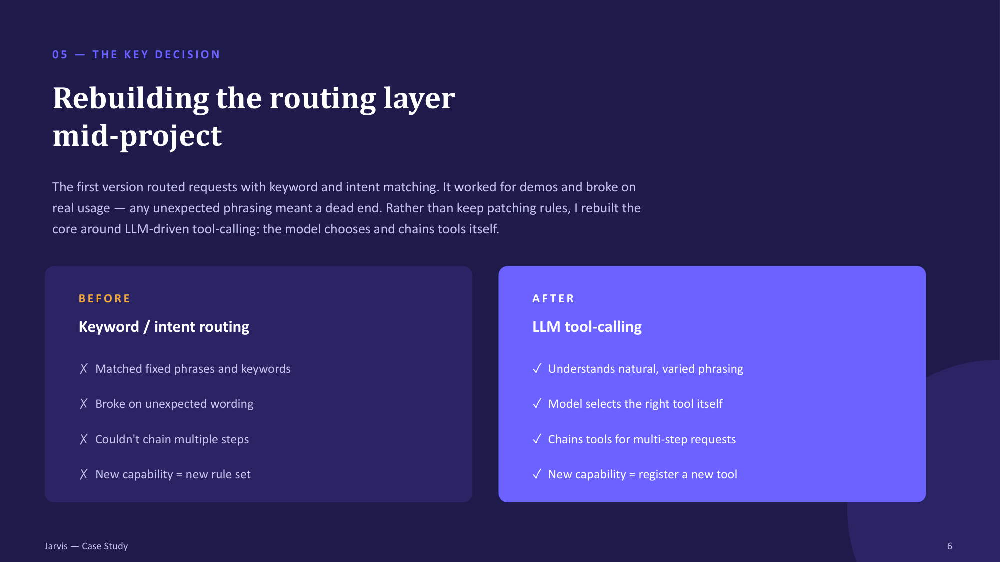
07. Feature Modules
Reviewing the 10+ active modules registered as self-contained tools, including Gmail OAuth integrations, focus timers, and scroll blockers:
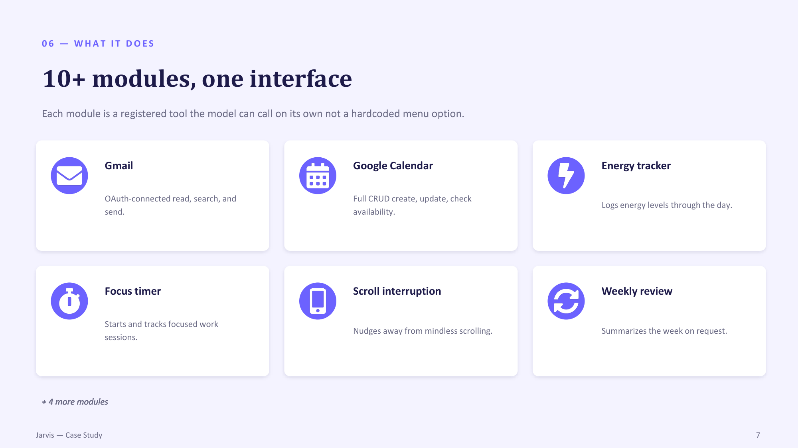
08. Interface Design
A chat-first, voice-ready conversational container featuring persistent session tracking and speech output:
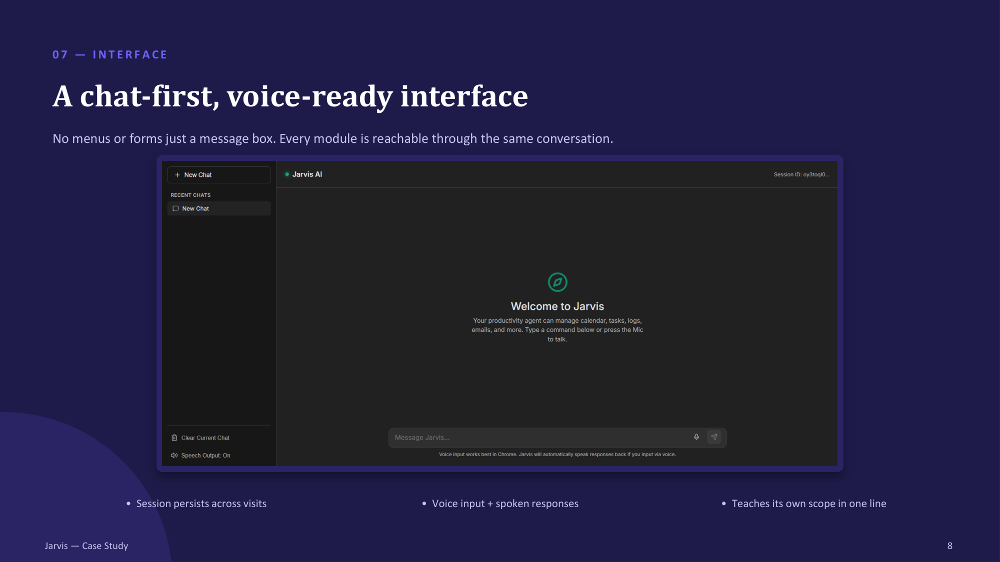
09. User Journey
Illustrating how a single composite request is parsed and executed sequentially across multiple tools:
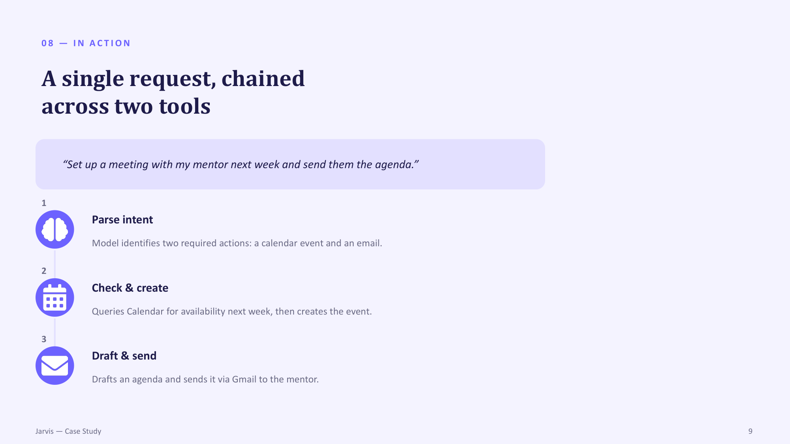
10. System Architecture
The system flow mapping the interaction between natural language input, the core LLM orchestrator, and the tool-registry modules:
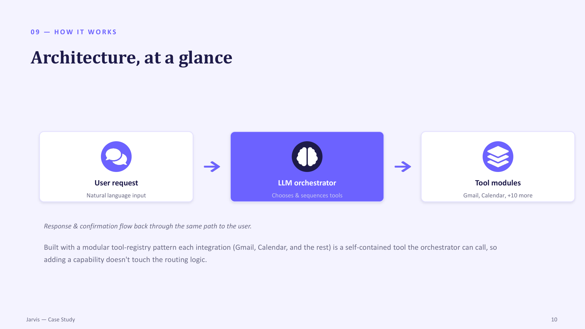
11. Engineering Challenges
Addressing reliability in tool selections, balancing LLM reasoning latency against user responsiveness, and sequencing solo project scope:
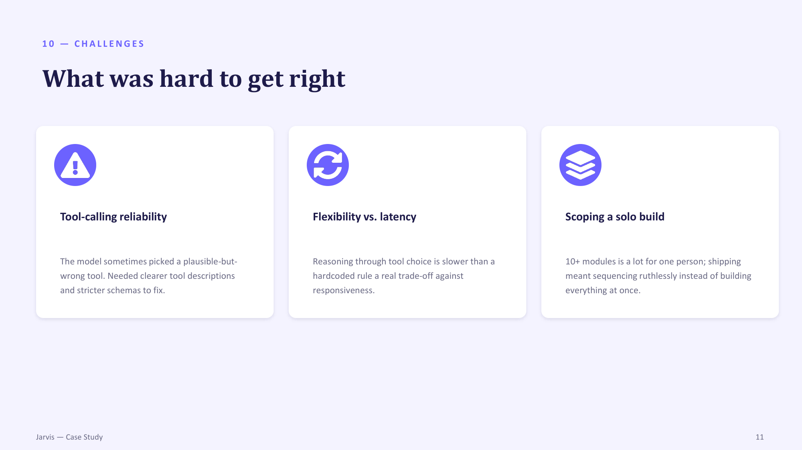
12. Project Reflection
Synthesizing key lessons in scoping, owning architecture trade-offs, and managing sunk costs when recognizing a design needs to be rebuilt:
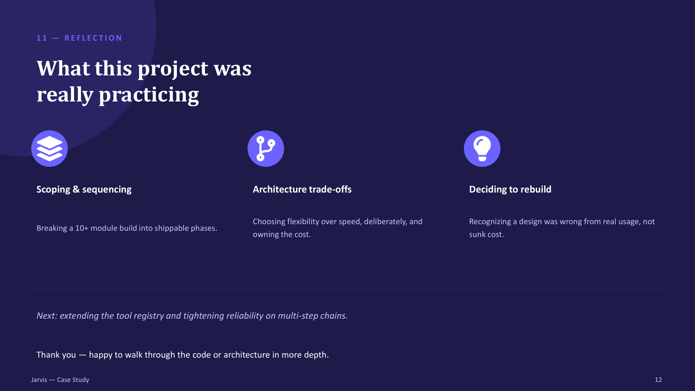